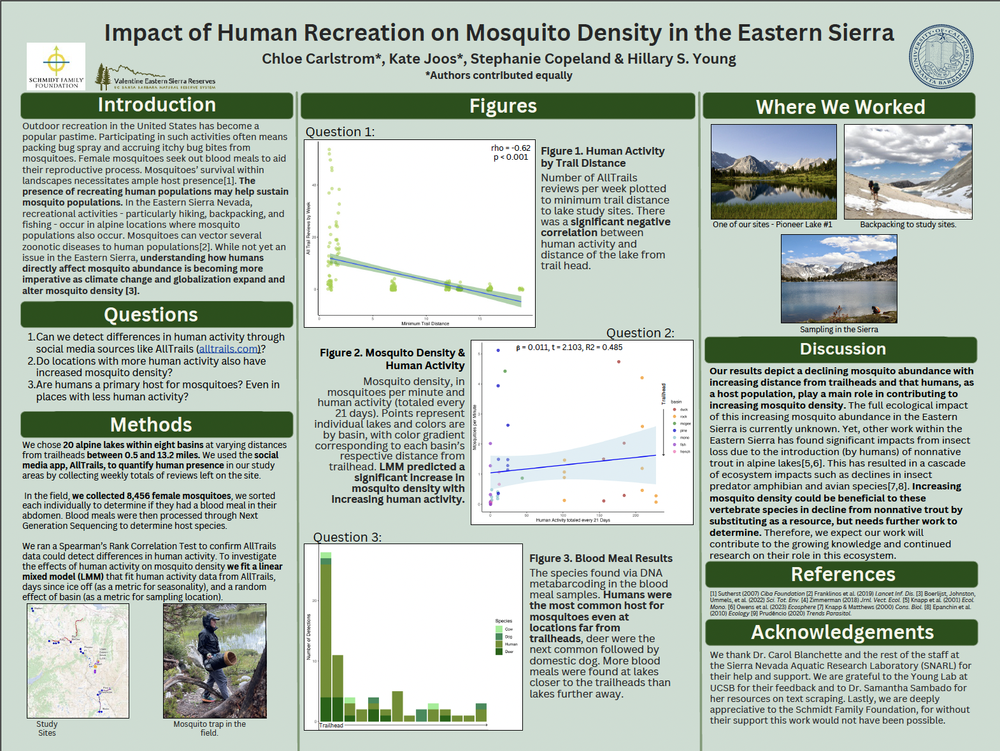

Impact of Human Recreation on Mosquito Density in the Eastern Sierra Nevada
Fieldwork
Research
Authors
Chloe Carlstrom
Stephanie Copeland
Kate Joos
Published
June 5, 2025
I assisted a PhD candidate in research mosquito populations in the Eastern Sierra Nevada and how human activity drives mosquito density. We spent six weeks in the back country collecting mosquito samples from 20 lakes within eight different basins. We sorted mosquitoes to find females that had taken a recent blood meal in order to determine host species. Our results depict a declining mosquito abundance with increasing distance from trailheads and that humans, as a host population play a main role in contributing to increasing mosquito density.

library(tidyverse)
── Attaching core tidyverse packages ──────────────────────── tidyverse 2.0.0 ──
✔ dplyr 1.1.4 ✔ readr 2.1.5
✔ forcats 1.0.0 ✔ stringr 1.5.1
✔ ggplot2 3.5.1 ✔ tibble 3.2.1
✔ lubridate 1.9.4 ✔ tidyr 1.3.1
✔ purrr 1.0.2
── Conflicts ────────────────────────────────────────── tidyverse_conflicts() ──
✖ dplyr::filter() masks stats::filter()
✖ dplyr::lag() masks stats::lag()
ℹ Use the conflicted package (<http://conflicted.r-lib.org/>) to force all conflicts to become errors
library(here)
here() starts at /Users/chlomaster/Downloads/GIT:GITHUB/chloecarlstrom.github.io
library(ggsignif)library(ggpubr)library(lme4)
Loading required package: Matrix
Attaching package: 'Matrix'
The following objects are masked from 'package:tidyr':
expand, pack, unpack
## concatenated data for both year (2024 & 2023) ### data grouped to each mosquito sampling point that was binned to the lake that was sampledmos <-read_csv((here::here('mosquito_data.csv')))
Rows: 107 Columns: 17
── Column specification ────────────────────────────────────────────────────────
Delimiter: ","
chr (5): lake, basin, date, trail, pass
dbl (12): time, mosquitoes, mos_min, hum_21, temp_min_20, temp_max_20, preci...
ℹ Use `spec()` to retrieve the full column specification for this data.
ℹ Specify the column types or set `show_col_types = FALSE` to quiet this message.
mos_edit <- mos #editable dataframe in environment## alltrails.com data ## # reviews & activities recorded in 2024 - reviews only for 2023#min and max distance from trail head for each basinalltrails <-read_csv((here::here('alltrails.csv')))
Rows: 331 Columns: 8
── Column specification ────────────────────────────────────────────────────────
Delimiter: ","
chr (4): basin, trail, start_date, end_date
dbl (4): year, reviews, min_dist, max_dist
ℹ Use `spec()` to retrieve the full column specification for this data.
ℹ Specify the column types or set `show_col_types = FALSE` to quiet this message.
##2024 Data - Not Concatenated to Lake##mos_2024 <-read_csv( here::here("mos_2k24.csv"))
Rows: 81 Columns: 15
── Column specification ────────────────────────────────────────────────────────
Delimiter: ","
chr (4): Lake, Sampler, B_or_a, Basin
dbl (9): Mosquitos, Time_min, Mos_min, Elevation, Dist_tr, Tree_cover, Wetl...
date (1): Date
time (1): Time_start
ℹ Use `spec()` to retrieve the full column specification for this data.
ℹ Specify the column types or set `show_col_types = FALSE` to quiet this message.
## blood meal species IDs for 2024 ##blood_2024 <-read_csv( here::here("2024_blood_ids.csv"))
Rows: 69 Columns: 9
── Column specification ────────────────────────────────────────────────────────
Delimiter: ","
chr (3): sample, lake, species
dbl (6): pident, length, mismatch, gapopen, evalue, bitscore
ℹ Use `spec()` to retrieve the full column specification for this data.
ℹ Specify the column types or set `show_col_types = FALSE` to quiet this message.
### Blood Meal ###species_counts <- blood_2024 %>%group_by(lake, species) %>%# group the vars by columns 'lake' and 'species' dplyr::summarise(count =n(), .groups="drop") # total how many time the 'species' was ID'd at each 'lake'# then drop group_by() command - .groups = "dropspecies_counts$lake <-factor(species_counts$lake, levels =c("arrowhead", "skelton", "leb", "marsh", "hidden", "heart", "flower", "matlock","big_mcgee", "pine", "upper_pine", "birchim", "honeymoon", "pioneer_1", "pioneer_2", "lower_pioneer", "tully", "cotton", "iw", "hortense", "elba", "moon"))# of the 61 samples - 26 came from lake arrowhead - so separated those out for potentiall# aiding in figure aesthetics arrowhead <- species_counts %>%filter(lake =="arrowhead") #filtering species_counts df for any rows in 'lake' for arrowheadwo_arrowhead <- species_counts %>%filter(lake !="arrowhead") #filtering species_counts df for any rows in 'lake' without arrowhead
full <-ggplot(species_counts, aes(x = lake, y = count, fill = species)) +geom_bar(stat ="identity", position ="stack") +scale_fill_manual(values =c("Canis_lupus_familiaris"="seagreen", "Homo_sapien"="olivedrab", "Bos_taurus"="lightgreen", "Odocoileus_hemionus"="darkgreen"),labels =c( "Canis_lupus_familiaris"="Dog", "Homo_sapien"="Human", "Bos_taurus"="Cow", "Odocoileus_hemionus"="Deer"))+labs(x ="Lakes", y ="Number of Detections", fill ="Species") +theme_classic() +theme(axis.text.x =element_text(angle =45, hjust =1))full